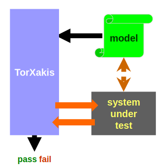

The next step in test automation
High-tech embedded systems are characterized by many components interacting closely with each other. These complex
systems are extensively tested to ensure quality and performance. Although some testing activities have been automated,
many test activities are still manual. TorXakis is a model-based testing tool that enables the next step in test
automation.

Why TorXakis
In the last decades, TESTING high-tech embedded systems has become an EXPENSIVE ACTIVITY. In many companies, testing
currently accounts for more than half of the total costs. Why has the testing effort increased?
One, the PERFORMANCE, ranging from availability to robustness, and from throughput to response time, of these
embedded systems has steadily increased.
Two, the COMPLEXITY of these systems has increased substantially, not only in the number of system features,
components, states, and configuration parameters, but also in the amount of input and output data.
Last, automation of testing has so far been limited to test execution:
testers STILL MANUALLY define many test cases to cover all requirements of the system, and
whenever the system evolves, need to manually review and possible update all test cases.
The Details
TorXakis is a model-based testing tool
The TorXakis modelling language is POWERFUL ENOUGH TO CAPTURE THE BEHAVIOR of high-tech embedded systems, including
COMMUNICATION, SYNCHRONIZATION, SEQUENCE, PARALLELISM, NON-DETERMINISM, CHOICES, STATES, AND CONSTRAINTS. Based on the
model, TorXakis AUTOMATICALLY GENERATES AND EXECUTES TEST CASES. Consequently, whenever the system changes, testers
only need to change the model to be able to test the changed system.
Benefits
When using TorXakis, one will not only experience the BENEFITS OF MODELLING in general, such as:
- Modelling systems during design typically EXPOSES CONCEPTUAL ERRORS EARLY; and
- Using models with an explicit semantic instead of free format text documents and/or presentations during design and
development REDUCES THE RISKS OF MISINTERPRETATION AND MISCOMMUNICATION.
But also, the following TorXakis specific benefits:
- The model will provide A TESTABLE INTERFACE BETWEEN DESIGN AND DEVELOPMENT. On the one hand, the model is the
SPECIFICATION FOR DEVELOPMENT. On the other hand, TorXakis can CHECK WHETHER THE DEVELOPED SYSTEM ADHERES TO THE
MODEL;
- The formal sematics of TorXakis will ensure unambiguous test results; and
- Test effort is reduced. Instead of building and maintaining a collection of test cases, one only needs to build and
maintain a model, from which TorXakis will automatically generate test cases.
Acknowledgements
Part of the research and development of TorXakis is carried out
-
as part of the NWO-TTW project 13859: SUMBAT: Supersizing Model-Based Testing.
-
as part of the Enable-S3 program under the responsibility of ESI (TNO) with Philips as the carrying industrial partner. The Enable-S3 research is supported by the Netherlands Ministry of Economic Affairs (Toeslag voor Topconsortia voor Kennis en Innovatie).